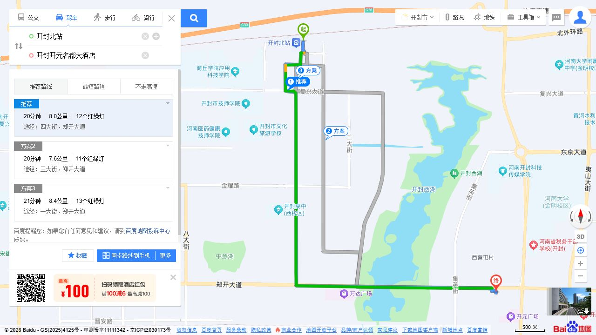
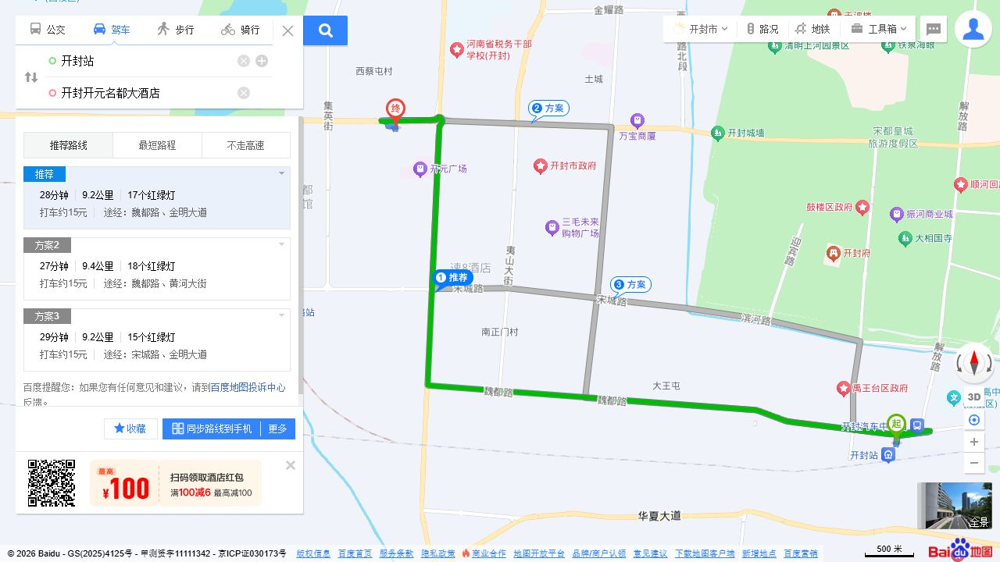
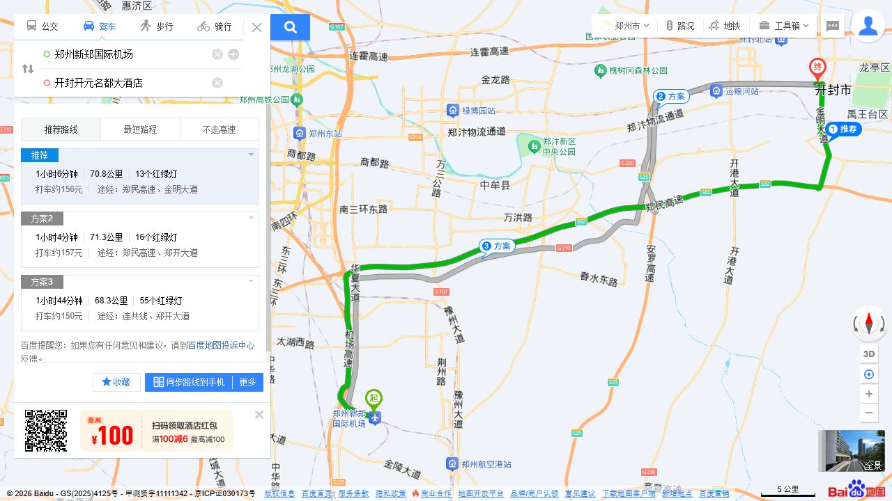
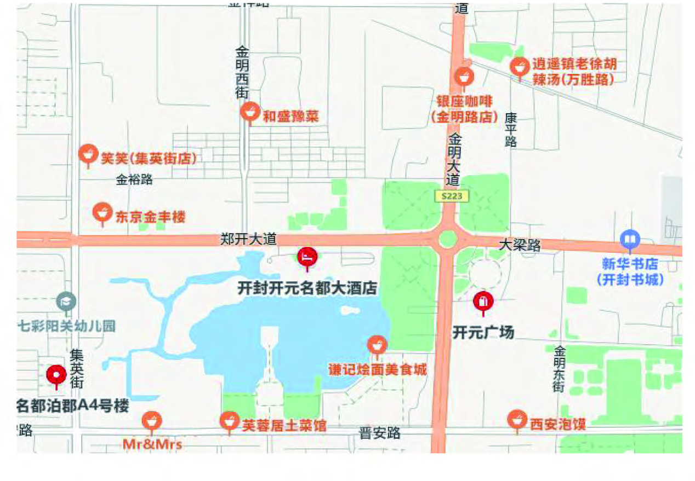

导航时请搜索“开封开元名都大酒店”，并核对地址为“郑开大道东1号”。乘坐高铁可选择开封北站；乘飞机可抵达郑州新郑国际机场，再前往开封。
| 抵达地点 | 距酒店约 | 到达方式 |
|---|---|---|
| 开封北站（高铁） | 8公里 | 出站后乘出租车或网约车前往酒店。乘公交可在地图中以酒店为终点查询当日路线。 |
| 开封站（火车） | 9.2公里 | 出站后乘出租车或网约车前往酒店；公交路线请以出行当日地图查询为准。 |
| 宋城路站（城际） | 3公里 | 如所选城际列车停靠宋城路站，可在此下车，再乘出租车或网约车前往酒店。 查看路线地图 |
| 郑州东站（高铁中转） | 50公里 | 可查询前往开封北站/宋城路站的列车，抵达后乘车前往酒店；也可直接乘出租车或网约车。 查看路线地图 |
| 郑州新郑国际机场 | 70.8公里 | 可直接乘出租车或网约车前往酒店。如选择铁路换乘，请查询新郑机场站至开封方向的当日车次及换乘安排。 |
驾车参考：约8.0公里，约20分钟。推荐路线途经四大街、郑开大道。

驾车参考：约9.2公里，约28分钟。推荐路线途经魏都路、金明大道。

驾车参考：约70.8公里，约1小时6分钟。推荐路线途经郑民高速、金明大道。


本次讲习班会议酒店为河南开封开元名都大酒店，位于金明池畔。酒店介绍可参阅开元旅业集团官网。
| 酒店名称 | 河南开封开元名都大酒店 |
|---|---|
| 地址 | 河南省开封市龙亭区郑开大道东1号 |
| 酒店电话 | 0371-23399999（酒店咨询，非会务联系电话） |
| 会议协议房价 | 待公布 |
| 会议住宿预订方式 | 待公布 |
| 报到安排 | 具体时间及办理位置待公布 |